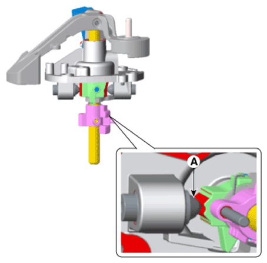
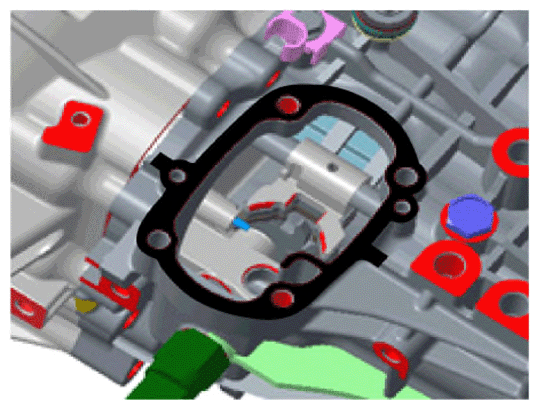

LEMON Manuals
: Even more car manuals for everyone: 1960-2025
Home
>>
Hyundai
>>
2022
>>
Elantra N Line, Standard Trans
>>
Repair and Diagnosis
>>
Transmission
>>
Manual Trans
>>
Manual Transaxle Control System - 1.6L (Except HEV)
>>
Control Shaft Complete
>>
Repair Procedures
>>
Installation
Repair Procedures: Installation
To install, reverse the removal procedures.
NOTE:
When installing, set control shaft lever to neutral position (A).

Courtesy of HYUNDAI MOTOR AMERICA
Apply the sealant to the contact surface of transaxle and control shaft.
Specified sealant
: LOCTITE 5060

Courtesy of HYUNDAI MOTOR AMERICA
CAUTION:
Check operating of lever of transaxle side when operating shift lever after assembly. (1~6, R)